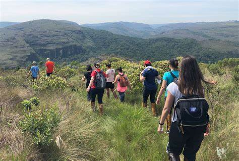

Informações e Dicas
Início
Atrações
Informações
Dicas para Turistas
Use roupas adequadas para caminhadas.
Leve um mapa ou use aplicativos de GPS.
Respeite a natureza e siga as trilhas marcadas.

MAPA DAS PAIASAGENS
Mapa de Cotwolds
Mapa das Seven Sisters Cliffs
Mapa de Lake District